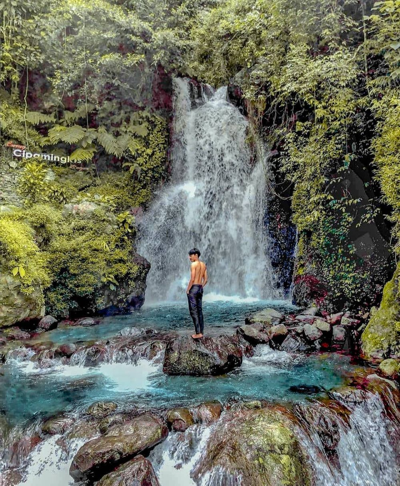

Curug Nangka
Curug Nangka adalah air terjun yang terletak di kawasan Taman Nasional Gunung Halimun Salak, Bogor. Dikelilingi oleh hutan tropis yang lebat, tempat ini menawarkan suasana alami yang asri dan segar. Cocok untuk Anda yang menyukai petualangan ringan dan ingin menikmati keindahan alam yang tenang.